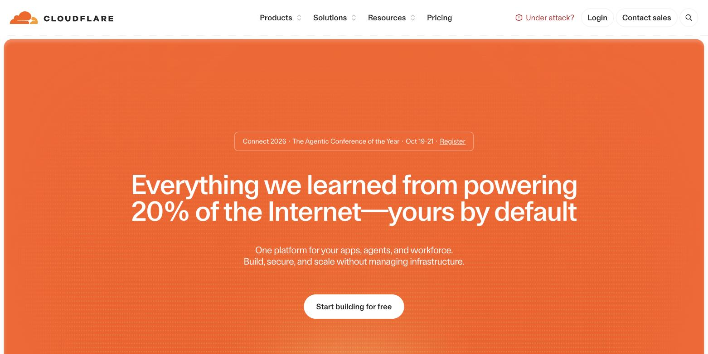
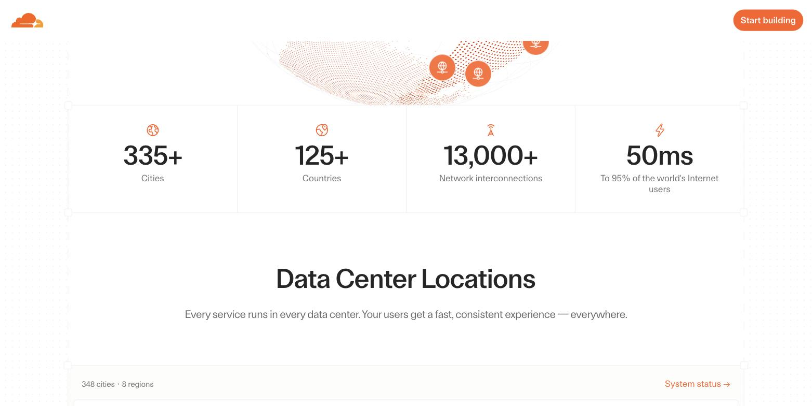
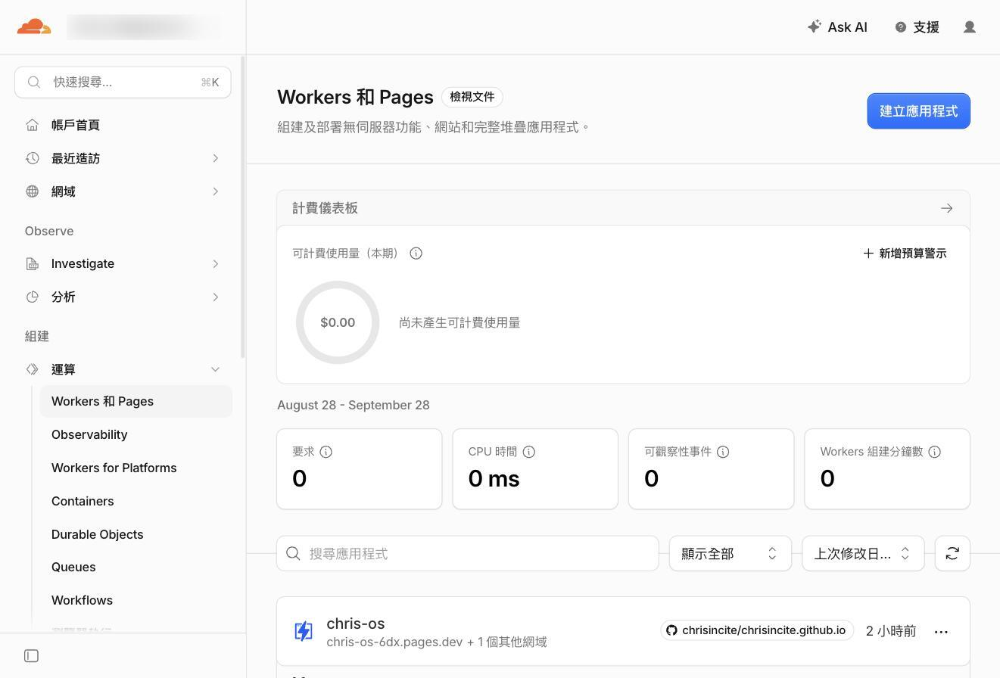
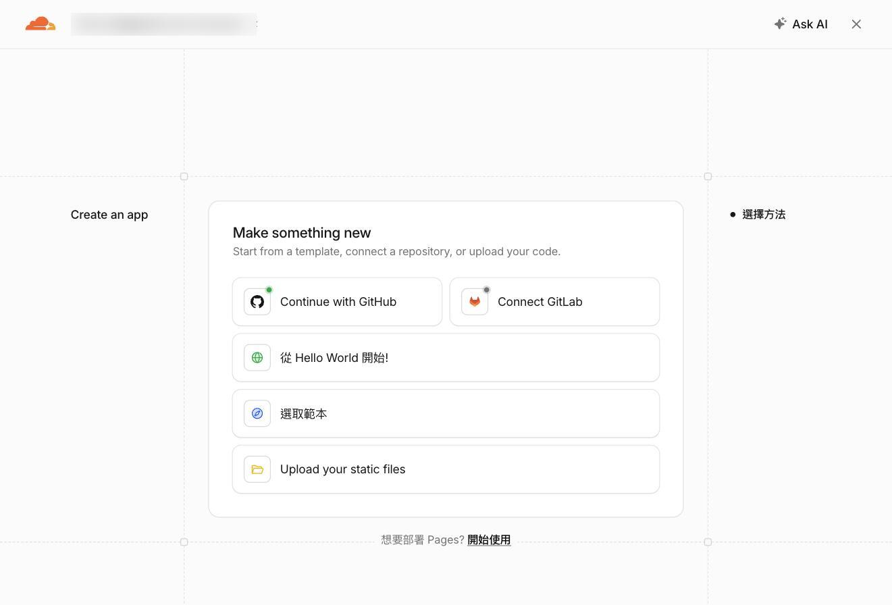
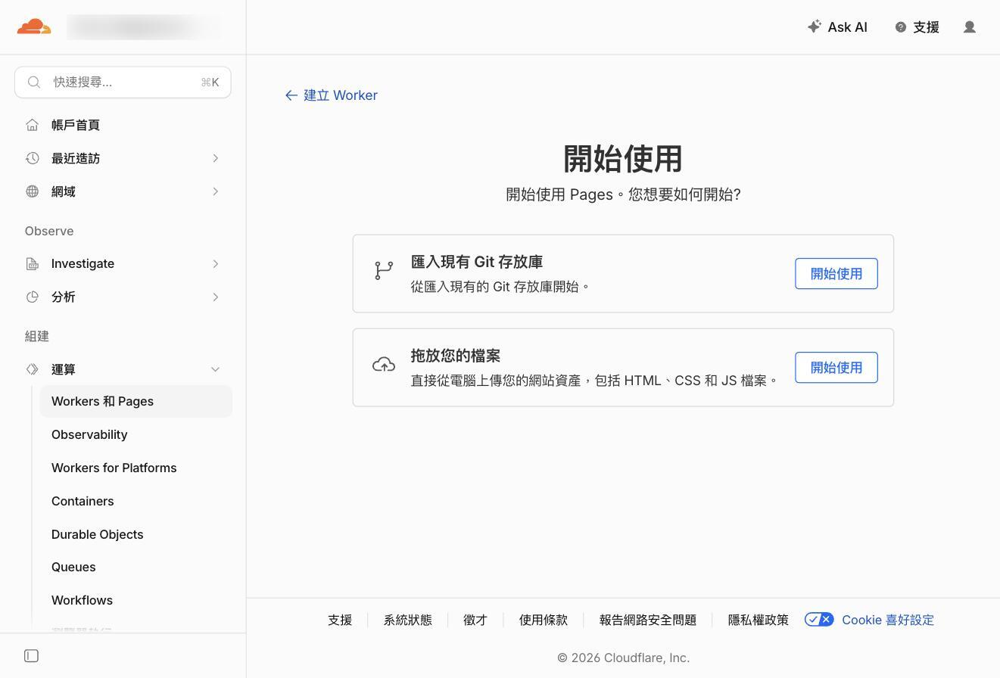
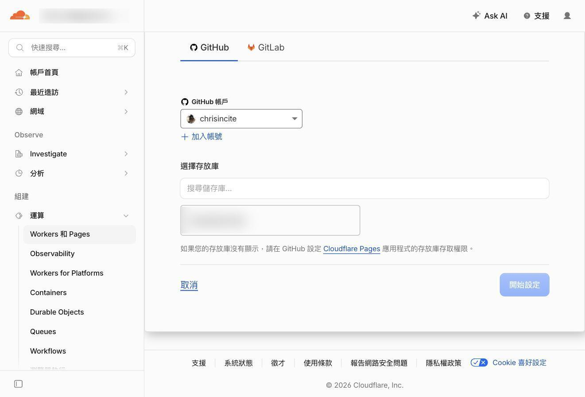
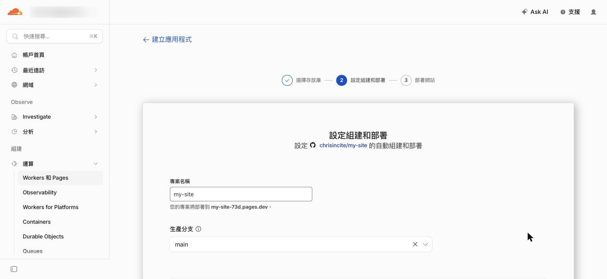
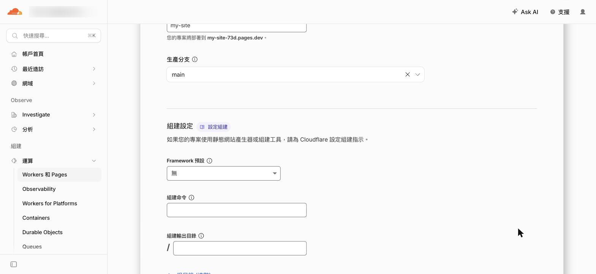
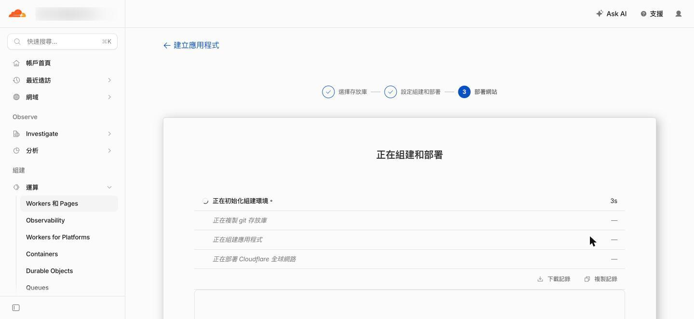
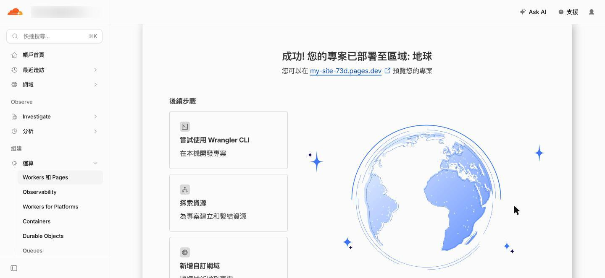

🔰 超入門 ·
小學生也能懂的『Cloudflare』超入門
讓 Claude Code 做出網站骨架、放進 GitHub 私人倉庫、再接到 Cloudflare Pages 上線——三段路走完，你會有一個真的網址，而且不用付錢。
🖍 先看圖解版用最少的字、最大的圖說一次我的桌面上有一個資料夾，叫做「我的作品集」。
裡面有一個 index.html，雙擊會打開，畫面其實做得還不錯。
我把整個資料夾壓成 zip 寄給朋友，想聽聽他的意見。他回我一張截圖：滿版的白，圖全破了，字擠成一團。
因為那些圖片的路徑，寫的是我電腦裡的 /Users/chris/Desktop/我的作品集/img/。
他的電腦上沒有那個地方。
那天我才想通一件事——我做的不是一個網站，是一個只有我打得開的檔案。
「架網站不是要租主機、每個月付錢嗎？」
「我連 DNS 是什麼都不知道，這種事哪輪得到我。」
「Cloudflare？那不是幫大公司擋駭客攻擊的嗎，跟我一頁自我介紹有什麼關係？」
抱著這樣的疑惑，默默把畫面關掉的人應該不少。
這篇文章分成六個章節。第一章說明 Cloudflare 到底是什麼、為什麼它敢免費；第二到第四章是實際的三段路——讓 Claude Code 做出網站的骨架、放進 GitHub 的私人倉庫、接到 Cloudflare Pages 拿到網址；第五章講四個一定會踩的坑；第六章談怎麼把這整條路交給 AI。
專有名詞會全部拆開來講。就算你現在完全零知識，也可以放心閱讀。
如果你還沒讀過同系列的〈小學生也能懂的『GitHub』超入門〉和〈小學生也能懂的『Claude Code』超入門〉，不讀也沒關係，該解釋的地方這裡都會再解釋一次。
※本文中 Cloudflare 的畫面與規格，是截至 2026 年 9 月為止，實際操作官方網站並確認官方文件後的內容。
第一章：Cloudflare 是什麼｜開在全世界三百多個城市的便利商店
先講結論。
Cloudflare 是一張鋪在全世界的網路。它站在你的網站「前面」，幫你把東西送到每個人手上，順便幫你擋掉不該進來的東西。
而 Cloudflare Pages，是這張網路上的一個服務：你把做好的檔案交給它，它直接給你一個網址，全世界都連得到。
不用租主機。不用設定伺服器。不用綁信用卡。

想像一家開在全世界的便利商店
你寫了一本小冊子，想給全世界的人看。
傳統的做法，是租一間店面。 你把冊子放在店裡，全世界的人都得走到你這一間店來拿。
住在隔壁的人，三分鐘就拿到了。
住在地球另一邊的人，要飛十四個小時。
而且如果有一天一萬個人同時擠進來，那間小店會直接被塞爆，門都打不開——這就是網站「掛掉」。
Cloudflare 的做法，是在全世界三百多個城市各開一家分店，每一家都放一份你的冊子。
東京的人去東京那家拿。聖保羅的人去聖保羅那家拿。台北的人走到街角就有。
所以快。
也所以擠不爆——一萬個人湧進來，會被分散到三百多個城市，沒有任何一家會被擠垮。

這套「把同一份東西放到全世界各地，誰來就從最近的地方給他」的機制，專有名詞叫做「CDN（內容傳遞網路，Content Delivery Network）」。
名字很難，做的事情就是開分店而已。
那 Cloudflare Pages 又是什麼
上面那個比喻裡，還缺一塊。
你的「原稿」放在哪裡？分店的影本要從哪裡印？
傳統上，原稿要放在你自己租的那間店（主機）裡。分店只是幫你轉送。
Cloudflare Pages 做的事情是：連原稿倉庫都幫你準備好。
你把做好的檔案交給它，它直接收下，印成三百多份鋪到全世界，然後給你一個網址。
專有名詞叫做「靜態網站託管（static site hosting）」。
「靜態」的意思是：你交出去的檔案長什麼樣，別人看到的就是什麼樣。它不會在你背後偷偷算什麼、查什麼資料庫。
一頁自我介紹、一份作品集、一個活動公告、一份公開的筆記——這些全部都是靜態網站。
為什麼它敢免費？
這是我一開始最不相信的地方。
免費的東西通常有陷阱：流量超過就收錢、跑一陣子就逼你升級、或是在你的頁面塞廣告。
Cloudflare Pages 的官方定價文件上，這句話是白紙黑字寫著的：
Requests to static assets are free and unlimited. （對靜態檔案的請求，免費，且沒有上限。）
沒有流量上限。沒有廣告。免費方案不需要綁信用卡。
為什麼做得到？
因為那三百多家分店，它本來就已經開好了——那是它做企業生意用的網路。多印一份你的自我介紹放進去，對它來說幾乎是零成本。
它真正要收錢的，是「每次都要現場重算」的東西：資料庫、登入、後端程式。那些才耗它的機器。
你放一頁自我介紹，它連眉頭都不會皺一下。
今天要走的三段路
知道它是什麼之後，來看整條路長什麼樣。
從「什麼都沒有」到「一個真的網址」，中間是三段：
| 段 | 工具 | 它負責什麼 | 一句話 |
|---|---|---|---|
| 第一段 | Claude Code | 做出網站的檔案 | 工匠 |
| 第二段 | GitHub | 保管每一次修改 | 保管室 |
| 第三段 | Cloudflare Pages | 送到全世界 | 連鎖店 |
三個都是免費的。
而且接起來之後會變成這樣：你以後只要改東西、存檔，網站就自己更新了。 不用再登入任何後台、不用再上傳任何檔案。
到這裡，我們已經知道 Cloudflare 是一張鋪在全世界的網路，而 Pages 是它上面「幫你把網站發出去」的那個服務。
接下來，就從第一段路開始——先把網站做出來。
第二章：讓 Claude Code 做出網站的骨架｜你負責講，它負責打字
Claude Code 是一個住在終端機（黑色畫面）裡的 AI 助手。
你用中文跟它講話，它直接在你的電腦上建檔案、改檔案。
這一章不需要你會寫任何一行 HTML。你只要會描述你想要什麼。
動作一：開一個空資料夾
在你的「文件」底下開一個新資料夾，取名 my-site。
名字用英文小寫、不要有空格。這個名字後面會出現在好幾個地方，中文和空格會在某些環節製造麻煩。
動作二：在那個資料夾裡打開 Claude Code
打開「終端機」（Terminal），輸入這兩行：
cd ~/Documents/my-site
claude第一行的意思是「走到那個資料夾裡」。
第二行是叫它起床。
如果你還沒裝過 Claude Code，同系列的〈Claude Code 超入門〉那篇有一行安裝指令。
動作三：把你想要的東西講出來
這是整篇文章裡唯一需要你動腦的地方。
不要講「幫我做一個網站」——太模糊，它會自己亂猜。
把「有哪幾塊」講出來就好：
幫我做一個個人網站，純 HTML + CSS，不要用任何框架。
需要這幾塊：
- 首頁：我的名字、一句自我介紹、一張大圖的位置
- 關於我：三段文字
- 作品：六個格子，每格一張圖加一行說明
- 聯絡：email 和兩個社群連結
風格：白底黑字、乾淨、留白多一點。手機上也要能看。
圖片先放佔位用的灰色方塊，我之後自己換。為什麼特別強調「純 HTML + CSS，不要用任何框架」？
因為框架（React、Next.js 這類）會多出一個「建置（build）」的步驟——要先編譯過才能變成網頁。第一次上線的人，能少一個環節就少一個出錯的地方。
先讓最單純的版本跑通，之後再加東西。 這是這篇文章從頭到尾的原則。
動作四：在自己的電腦上先看一眼
它做完之後，資料夾裡大概會有這些檔案：
my-site/
├── index.html ← 首頁
├── about.html
├── work.html
├── style.css ← 外觀
└── img/index.html 這個名字是有意義的。
它是「門口那扇門」。 任何人連到你的網址、後面什麼都不加，看到的就是這一頁。這是全世界網頁伺服器的共同默契，名字不能改。
想在電腦上先看看長什麼樣，跟 Claude Code 說：
幫我在本機開一個伺服器，讓我用瀏覽器看看它會跑起一個本機網址（通常長得像 http://localhost:8000），你在瀏覽器打開就看得到。
不滿意就直接講：「首頁的字太小了」「把作品改成四個格子」「配色改成米白」。
改到你滿意為止，再往下走。
但它現在還不是網站
這一點很重要。
你現在瀏覽器上那個 localhost:8000，只有你自己連得到。
localhost 的意思就是「這台電腦本身」。你把這個網址傳給朋友，他打開會看到他自己電腦上的東西（多半是什麼都沒有）。
就跟我開頭寄 zip 給朋友的那次一樣——檔案在你手上，不等於網站存在。
要變成網站，還缺一個「全世界都連得到的地方」。
到這裡，我們已經有一個做好的資料夾了。
接下來，要先把它放進一個安全的保管室。
第三章：放進 GitHub 的私人倉庫｜保管室，也是輸送帶
這一步很多人會問：「我直接把資料夾丟給 Cloudflare 不就好了？為什麼要多繞 GitHub 一圈？」
可以直接丟。Cloudflare Pages 確實支援把資料夾拖進去上傳。
但繞這一圈，你會多拿到兩件事：
第一，每一次修改都有記錄。 改壞了可以退回去。三個月後也還知道當初改了什麼。
第二，也是關鍵的——以後不用再手動上傳。 GitHub 和 Cloudflare 接起來之後，你在電腦上存一次檔，網站就自己更新了。
GitHub 在這裡有兩個身分：它是保管室，也是一條輸送帶。
為什麼要用「私人」倉庫
GitHub 上的倉庫（repository，一般叫 repo）分兩種：公開的（public）和私人的（private）。
兩種都免費，數量沒有上限。
Cloudflare Pages 兩種都支援。 官方文件寫得很清楚：Both private and public repositories are supported.
那為什麼建議用私人的？
因為倉庫裡除了網頁檔案，通常還會有一些你不想給人看的東西：草稿、還沒公開的作品、寫到一半的頁面、備忘筆記。
倉庫私密，不影響網站公開。 這兩件事是分開的。
這也是整篇文章最容易被誤會的一個觀念，第五章的坑一會再講一次：私人倉庫保護的是「原始檔案」，不是「網站內容」。
動作一：讓 Claude Code 幫你建倉庫
直接跟它說：
幫我把這個資料夾變成 git 倉庫，
在 GitHub 上建一個私人倉庫叫 my-site，然後推上去。它會做這幾件事：把資料夾變成 git 倉庫、建一個 .gitignore（列出哪些檔案不要上傳）、做第一次存檔、在 GitHub 上開一個私人倉庫、把東西推上去。
如果它回你「需要先登入 GitHub」，照它給的指令做一次就好，之後不用再登入。
動作二：自己點滑鼠也可以
不想碰指令，就用 GitHub 官方的圖形介面軟體 GitHub Desktop。
流程是：File → Add Local Repository → 選你的資料夾 → 它會問要不要建立倉庫 → Publish repository → 記得把 Keep this code private 勾起來。
那個勾勾就是公開和私人的差別，預設是勾起來的，不要取消。
動作三：確認東西真的上去了
打開 github.com，登入，看看有沒有那個倉庫。
點進去，應該看得到 index.html、style.css 這些檔案，倉庫名稱旁邊會有一個灰色的 Private 標籤。
有看到，這一段就完成了。
到這裡，你的網站檔案已經有一份在雲端了，而且有完整的修改記錄。
接下來是最後一段路——把這個倉庫接到 Cloudflare，讓它變成一個真的網址。
第四章：接上 Cloudflare Pages｜六個步驟，拿到你的網址
這一章是整篇的重點。
全程點滑鼠，不需要打任何指令。
先說一句實話：Cloudflare 的後台改版很勤，官方文件常常落後於畫面。 我寫這一章的時候，官方文件教的路徑已經跟實際畫面對不上了。
所以下面每一步都附了截圖。以畫面為準，不要以任何人的文字為準——包括我的。
步驟一：註冊 Cloudflare 帳號
打開 <https://dash.cloudflare.com/sign-up>。
它只問兩件事：email 和密碼。
沒有信用卡欄位。沒有方案選擇。免費方案是預設的，你什麼都不用選。
註冊完會收到一封驗證信，點一下裡面的連結。
步驟二：找到 Pages 的入口（它藏得有點深）
登入之後，左邊的選單找 運算（Compute），點開，第一項就是 Workers 和 Pages。
如果你的介面是英文，那是 Compute → Workers & Pages。

你可能會愣一下：「我要的是 Pages，Workers 又是什麼？」
Workers 是 Cloudflare 另一個產品，用來跑程式的。跟你今天要做的事沒有關係。
它們被放在一起，是因為底層是同一套系統。Cloudflare 這幾年在把兩者合併，所以到處都會看到 Workers 這個字。
你只要知道：我要的是 Pages。
步驟三：在「建立應用程式」裡找到那行小字
按右上角的 建立應用程式。
然後你會看到一個叫 Make something new 的畫面，上面全部都是 Workers 的選項。
不要按那些。

按那行小字的 開始使用。
步驟四：選「匯入現有 Git 存放庫」
進來之後有兩條路：

按上面那條的 開始使用。
接下來的畫面會列出你 GitHub 上的倉庫，選 my-site，按 開始設定。
如果你的倉庫沒有出現在清單裡，先別急著懷疑人生。

my-site 不在上面。答案就寫在清單底下那行小字：「如果您的存放庫沒有顯示，請在 GitHub 設定 Cloudflare Pages 應用程式的存放庫存取權限。」 這是授權範圍的問題，不是壞掉——第五章的注意事項四會講怎麼解。步驟五：那三格設定，什麼都不用改
選好倉庫之後，進到「設定組建和部署」。
先看最上面：

my-site，它卻自己加了 -73d。因為 my-site 這個名字全世界只有一個，早就被別人用掉了。想要漂亮的網址，就把專案名稱取得獨特一點。生產分支保持 main 不用動。再往下捲，是整篇文章最多人填錯的地方：

/——那是欄位自己帶的固定前綴，不是要你填的東西，輸入框留白就代表「檔案在倉庫最外層」。很多教學（包括官方文件的舊版本）會說這格要填 /，那會讓你多打一個斜線。純 HTML 網站，這三格的預設值就是正確答案。
什麼都不用改。
步驟六：按下去，然後等一分鐘
捲到最底，按 儲存並部署。

大約一分鐘之後：

.pages.dev 網址就是你的網站。點那個網址。
而且它已經自動上了 HTTPS（網址前面那個鎖頭）。
這件事在十年前要花錢買憑證、還要自己設定，現在是預設的，你什麼都不用做。
之後呢？你只要存檔就好
這是接上 GitHub 最大的好處。
以後你想改網站，流程是這樣：
改檔案 → 存檔推上 GitHub → 網站自己更新中間沒有你的事。不用登入 Cloudflare，不用上傳任何東西。
Cloudflare 會一直盯著你那個倉庫，看到有新東西就自動重做一次。
跟 Claude Code 講一句「幫我把這次的修改推上去」，一分鐘後你的網站就是新的了。
免費方案每個月可以自動重做 500 次。
一天改十六次都還用不完。
到這裡，三段路走完了。
接下來講四個一定會踩到的坑——尤其是第一個，那是觀念問題，不是操作問題。
第五章：初學者該注意的四個重點｜這些陷阱務必避開
注意事項一：私人倉庫，不等於私密網站
這是最重要的一個。
症狀。 你把倉庫設成 private，覺得「這樣就沒人看得到了」。於是在裡面放了還沒公開的作品、寫到一半的頁面、只想給客戶看的報價單。
結果那些東西全部出現在 my-site.pages.dev 上，任何人都打得開。
機制。 私人倉庫保護的是「原始檔案的存取權」——別人不能進你的 GitHub 倉庫翻東西。
但 Cloudflare Pages 做的事情，就是把那些檔案「發佈到全世界」。
發佈出去的東西，本來就是給全世界看的。這兩件事不衝突，只是很多人以為 private 會一路傳染到網站上。
更容易忽略的是預覽網址。
Cloudflare 官方文件寫得很直接：By default, these deployment URLs are public.（預設情況下，這些部署網址是公開的。）
意思是：你在 GitHub 上開一條新的分支來試東西，Cloudflare 也會幫那條分支生一個網址，長得像 373f31e2.my-site.pages.dev。
那個網址沒有密碼。 網址很難猜，但「難猜」不是「安全」。
正確做法。
不想給人看的東西，不要放進這個倉庫。就這麼簡單。
草稿、報價單、客戶的照片——另外開一個倉庫放，那個倉庫不要接 Cloudflare。
真的需要保護預覽網址，Cloudflare 有一個叫 Access 的功能可以把預覽鎖起來（在專案設定裡開），但這是進階題，第一次上線不必碰。
記住那條界線就好：進到這個倉庫的東西，等於公開。
注意事項二：那三格亂填，網站會上線，但打開是一片空白
症狀。 部署顯示成功，綠色勾勾，一切正常。
你興奮地點開網址——404 Not Found。
或是更怪的：看到一排檔案清單，像在瀏覽別人的硬碟。
機制。 問題出在 組建輸出目錄（Build output directory） 那一格。
那一格的意思是：「我的網頁檔案，放在倉庫的哪個位置？」
Cloudflare 只會把「那個位置裡面的東西」拿去發佈。
你的 index.html 就在倉庫最外層，所以那一格應該是空的（欄位左邊那個 / 是它自己印的前綴，代表最外層）。
如果你填了 dist 或 public——那是有用框架的網站才有的資料夾——Cloudflare 會去找一個叫 dist 的資料夾。找不到，或者找到一個空的，於是發佈了一片空白。
它不會報錯。 因為對它來說，「發佈一個空資料夾」也是一次成功的發佈。
同理，Framework 預設選錯（明明沒用框架卻選了 React）也會出事：它會去跑一個不存在的建置指令，然後失敗。
正確做法。
純 HTML 網站：三格全部保持預設（無、空、空）。
如果你之後真的用了框架，去 Framework 預設 的下拉選單裡選你的框架名稱，那兩格它會自動填好——不要自己猜。
改完設定之後，要去 部署 那一頁按一次重試部署，它才會用新設定重跑一次。光改設定不會自動生效。
注意事項三：靜態網站沒有「後台」，你寫進去的密碼等於貼在公佈欄
症狀。 你想做一個聯絡表單，或是想接一個 API 抓資料。
AI 幫你寫好了，裡面有一行：
const apiKey = "sk-xxxxxxxxxxxxxxxx";你推上去，網站正常運作，很開心。
三天後，你收到一封帳單，或是那把金鑰被停用了。
機制。 靜態網站上的每一個檔案，都是「發給訪客的」。
包括你的 JavaScript。
訪客的瀏覽器要執行它，就必須先拿到它。任何人按右鍵「檢視原始碼」，那串金鑰就在那裡。
而且網路上有機器人二十四小時在掃描公開的網頁和倉庫，專門撿這種東西。以分鐘為單位就會被撿走。
正確做法。
寫進網頁檔案裡的東西，一律當成公開的。 沒有例外。
需要用到金鑰的功能，要有一個「訪客拿不到的地方」去執行它——那就是 Cloudflare Workers 或 Pages Functions 的用途，也是這篇文章刻意先不碰的部分。
第一個網站，先不要做需要金鑰的功能。
聯絡方式就放 email 連結。表單就用 Google 表單嵌進去。
等你真的需要了，再回來學那一塊。
注意事項四：授權時選「只給特定倉庫」，之後每開一個新站都要回去補勾
症狀。 你在 Cloudflare 選倉庫的那一步，清單裡就是沒有你剛建好的那個倉庫。
搜尋也搜不到。重新整理也沒用。你開始懷疑是不是 push 失敗了。
機制。 第一次把 Cloudflare 接上 GitHub 的時候，GitHub 會問你要給多少權限：
- All repositories（全部倉庫）
- Only select repositories（只給指定的幾個）
安全的做法是選第二個——Cloudflare 只需要看它要部署的那一個，沒有理由給它看你全部的東西。
但代價就是這個：那份清單是寫死的。 之後新建的倉庫不在名單上，Cloudflare 就真的看不見它。
這不是壞掉，是權限照你說的做。
正確做法。
畫面上其實就寫了答案（圖 4-4 那行小字）。照著做：
- 打開 <https://github.com/settings/installations>
- 找到 Cloudflare Workers and Pages，按 Configure
- GitHub 可能會要你重新驗證一次身分（passkey 或密碼）——這是它保護帳號設定的機制，正常
- 在 Repository access 區塊，把新倉庫加進
Only select repositories的清單，按 Save - 回 Cloudflare 那一頁重新整理，倉庫就出現了
如果你懶得每次都來一趟，也可以直接選 All repositories。
那是一個取捨：方便，但 Cloudflare 從此看得到你 GitHub 上的每一個倉庫。
我的建議是照樣選「只給指定的」，把補勾這一分鐘當成開新站的固定成本。權限這種事，麻煩一點通常是對的。
第六章：用 AI 完成整條路｜三個平台，交給同一個人
這條路有一個很特別的地方：三段都是 Claude Code 做得到的。
它可以幫你寫網頁、可以幫你操作 GitHub，也可以透過 Cloudflare 的命令列工具幫你部署。
換句話說，你可以從頭到尾只講話。
事前準備只有兩件事
第一，在你的網站資料夾裡打開 Claude Code。
cd ~/Documents/my-site
claude第二，讓它知道你的 Cloudflare 帳號。
只有當你想讓它「直接部署」時才需要這一步。如果你已經照第四章接好 GitHub，其實不必——它只要幫你推上 GitHub，網站就會自己更新了。
這條路是我推薦的。 它更安全：AI 只碰得到你的倉庫，碰不到你的 Cloudflare 帳號。
真的需要讓它直接部署，跟它說：
幫我裝 wrangler 並登入 Cloudflarewrangler 是 Cloudflare 官方的命令列工具。登入會跳出瀏覽器讓你按「允許」——那一下必須你自己按。
三個最好用的句型
句型一：改完直接上線。
把首頁的自我介紹改成這段：（貼上新的文字），
確認本機看起來沒問題之後，推上 GitHub它會改檔案、開本機伺服器讓你看一眼、然後推上去。一分鐘後網站就是新的。
句型二：出事了，幫我看。
我的 Cloudflare Pages 部署成功了，但打開網址是 404。
幫我看看 build 設定跟檔案位置對不對這個句型很有用，因為第五章那個坑，它一眼就能看出來——它看得到你的檔案結構。
句型三：退回去。
剛才那次修改把版面弄壞了，幫我退回上一個版本，然後推上去這是接 GitHub 的紅利。每一次存檔都是一個可以回去的點，講一句話就能退。
但請守住這四條界線
一、讓它先說再做。
不確定它要幹嘛的時候，加一句「先跟我說你打算怎麼做，我同意了再動手」。
二、對外的動作，要你自己點頭。
推上 GitHub、部署到線上——這些是「全世界都會看到」的動作。讓它做可以，但你要知道它在做。
三、不可逆的動作一律先問。
刪除倉庫、刪除 Pages 專案、換掉專案名稱（網址會跟著換，舊網址直接失效）——這幾件事沒有還原按鈕。
四、寫出去的東西，自己看過一眼。
它寫的文案、它填的個人資料、它放的連結，都會出現在你的網站上，掛你的名字。
上線前，用瀏覽器從頭到尾捲一遍。這一分鐘省不得。
一個小提醒：先讓它做「讀」的事
第一週，只讓它做讀的事：看檔案、解釋設定、找出為什麼是 404。
第二週，開始讓它做可以回復的事：改內容、推上 GitHub（推錯了可以退回去）。
看得懂它在做什麼了，再交出不可逆的動作。
總結：今天要做的，只有一件事
網站不是一種技術，是一個位置。
你需要的不是「學會架站」，是把手上已經做好的東西，放到一個全世界都走得到的地方——而那個地方，現在是免費的。
Claude Code 幫你做出來，GitHub 幫你保管，Cloudflare 幫你發出去。三段路，一個下午。
你不需要一口氣把全部記起來。
今天要做的，只有一件事。
「開一個空資料夾，打開 Claude Code，跟它說：幫我做一個個人網站的骨架。」
剩下的兩段路，等你手上有東西了再走也不遲。
那個壓成 zip 寄出去、朋友打開是一片破圖的資料夾，你再也不用寄了。
你會有一個網址。
附錄：一頁速查表
三段路
| 段 | 做什麼 | 結果 |
|---|---|---|
| 1 | 在空資料夾打開 Claude Code，描述你要的網站 | 一個有 index.html 的資料夾 |
| 2 | 推上 GitHub 私人倉庫 | 雲端有一份，有修改記錄 |
| 3 | 運算 → Workers 和 Pages → 建立應用程式 → 最底下那行「想要部署 Pages?」 | 一個 .pages.dev 網址 |
純 HTML 網站的設定（最常填錯的地方）
| 欄位 | 填什麼 |
|---|---|
| Framework 預設 | 無（None） |
| 組建命令 | 留空 |
| 組建輸出目錄 | 留空（左邊那個 / 是欄位自帶的，不用打） |
| 生產分支 | main |
三個絕對不要
- 不要把不想公開的東西放進這個倉庫——私人倉庫不等於私密網站
- 不要把金鑰、密碼寫進網頁檔案——所有檔案都是公開的
- 不要自己填組建輸出目錄——純 HTML 網站三格全部保持預設
找不到倉庫的時候
去 <https://github.com/settings/installations> → Cloudflare Workers and Pages → Configure → Repository access → 把新倉庫加進去 → Save。
免費方案的數字
- 流量、訪客數：無上限（官方原文：static assets are free and unlimited）
- 每月自動部署次數：500 次
- 單一檔案大小上限：25 MiB
- 檔案總數上限：20,000 個
- 自訂網域：100 個
- 不需要信用卡
常用網址
- 註冊：<https://dash.cloudflare.com/sign-up>
- 後台：<https://dash.cloudflare.com>
- 官方文件：<https://developers.cloudflare.com/pages/>
- 免費方案限制：<https://developers.cloudflare.com/pages/platform/limits/>
懶人路線（已經接好 GitHub 之後）
跟 Claude Code 說一句：
改完幫我推上 GitHub一分鐘後，網站自己更新。